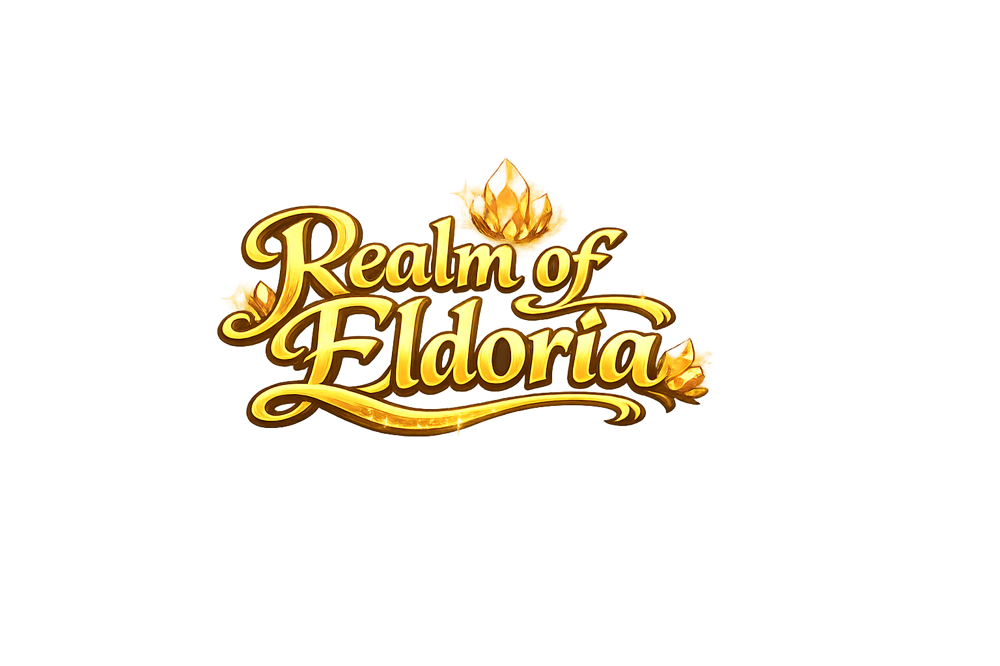

Who's playing?
2 + 2 = ?
Which seed makes you the most gold? Do the math!
Back up or restore a hero. Pick a slot, then Export to copy the text somewhere safe, or paste a backup and Import.
Which dish heals the most HP for your crops?
Your food
No food yet — cook a recipe above!
Answer right for a FREE bonus portion!
? × 2 = ?
...
14 − 6 = ?
Hits: 0
...